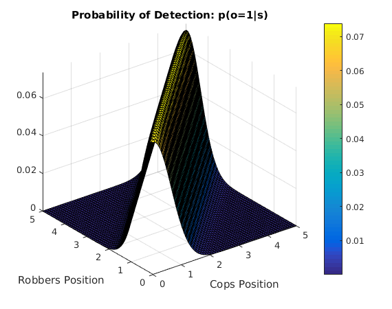
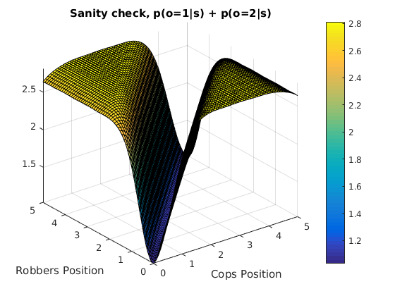
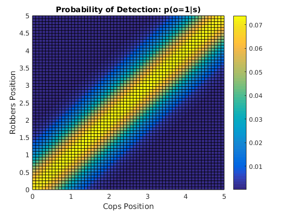
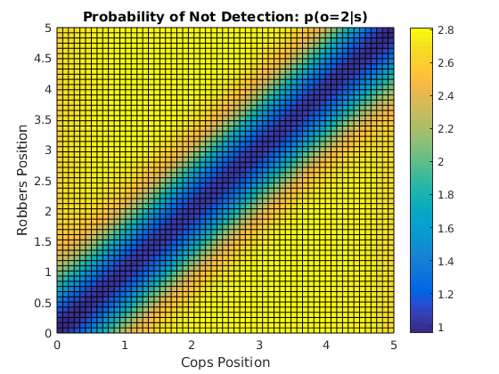

clear all;
ncBelief = 4;
ncAlpha=9;
actionScale=0.5;
S=CSpace([0;0],[5;5]);
A=DSpace(3);
O=DSpace(2);
gamma=0.95;
mu_a={[-actionScale;0] [actionScale;0] [0;0]};
Sigma_a={[0.05,0; 0 0.05] [0.05,0; 0 0.05] [0.05,0; 0 0.05]};
AM=CS_DA_ActionModel(S,A,mu_a,Sigma_a);
so = [1 .8; .8 1];
om{1} = GMixture(8*ones(1,8), ...
{Gaussian([-1;-1],so) Gaussian([0;0],so) Gaussian([1;1],so) Gaussian([2;2],so) ...
Gaussian([3;3],so) Gaussian([4;4],so) Gaussian([5;5],so) Gaussian([6;6],so)});
for i=-1:6
for j=1:12
tmp{(i+1)*6+j} = Gaussian([i;i+j],so);
end
end
lentmp = length(tmp);
for i=-1:6
for j=1:12
tmp{lentmp + (i+1)*6+j} = Gaussian([i;i-j],so);
end
end
om{2} = GMixture(192*ones(1,108),tmp);
OM = CS_DO_ObsModel(S,O,om);
for i=1:8
tmp{108+i} = Gaussian([i-2;i-2],so);
end
rm{1} = GMixture([-192*ones(1,108),45*ones(1,8)], tmp);
rm{2} = GMixture([-192*ones(1,108),45*ones(1,8)], tmp);
rm{3} = GMixture([-192*ones(1,108),45*ones(1,8)], tmp);
RM = CS_DA_RewardModel(S,A,rm);
POMDP=CS_DO_DA_POMDP('LukeTest2',S,A,O,AM,OM,RM,gamma,ncAlpha);
g1=Gaussian([1;1],[50,0;0,50]);
P.start=GBelief(GMixture([1 1 1 1],{g1 g1+[2;0] g1+[0;2] g1+[2;2]}),ncBelief);
P.nBeliefs=10;
P.dBelief=0.1;
P.stepsXtrial=30;
P.rMin=-0.5;
P.rMax= 0.5;
P.maxTime=100;
P.stTime=100;
P.numTrials=100;
P.stopCriteria=@(n,t,vc)(t>P.maxTime);
plot = 1;
if plot == 1
ezsurf(@(x,y)Value(GetObsModelFixedO(OM,1),[x;y]),[0 5],[0 5])
title('Probability of Detection: p(o=1|s)');
xlabel('Cops Position');
ylabel('Robbers Position');
colorbar;
figure();
ezsurf(@(x,y)Value(GetObsModelFixedO(OM,2),[x;y]),[0 5],[0 5])
title('Probability of Not Detection: p(o=2|s)');
xlabel('Cops Position');
ylabel('Robbers Position');
colorbar;
figure();
ezsurf(@(x,y)Value(GetObsModelFixedO(OM,1),[x;y]) + Value(GetObsModelFixedO(OM,2),[x;y]),[0 5],[0 5])
title('Sanity check, p(o=1|s) + p(o=2|s)');
xlabel('Cops Position');
ylabel('Robbers Position');
colorbar;
figure();
ezsurf(@(x,y)Value(GetObsModelFixedO(OM,1),[x;y]),[0 5],[0 5])
view(2);
title('Probability of Detection: p(o=1|s)');
xlabel('Cops Position');
ylabel('Robbers Position');
colorbar;
figure();
ezsurf(@(x,y)Value(GetObsModelFixedO(OM,2),[x;y]),[0 5],[0 5])
view(2);
title('Probability of Not Detection: p(o=2|s)');
xlabel('Cops Position');
ylabel('Robbers Position');
colorbar;
figure();
ezsurf(@(x,y)Value(GetObsModelFixedO(OM,1),[x;y]) + Value(GetObsModelFixedO(OM,2),[x;y]),[0 5],[0 5])
view(2);
title('Sanity check, p(o=1|s) + p(o=2|s)');
xlabel('Cops Position');
ylabel('Robbers Position');
colorbar;
end
Warning: Function failed to evaluate on array inputs; vectorizing the function
may speed up its evaluation and avoid the need to loop over array elements.
Warning: Function failed to evaluate on array inputs; vectorizing the function
may speed up its evaluation and avoid the need to loop over array elements.
Warning: Function failed to evaluate on array inputs; vectorizing the function
may speed up its evaluation and avoid the need to loop over array elements.
Warning: Function failed to evaluate on array inputs; vectorizing the function
may speed up its evaluation and avoid the need to loop over array elements.
Warning: Function failed to evaluate on array inputs; vectorizing the function
may speed up its evaluation and avoid the need to loop over array elements.
Warning: Function failed to evaluate on array inputs; vectorizing the function
may speed up its evaluation and avoid the need to loop over array elements.
   